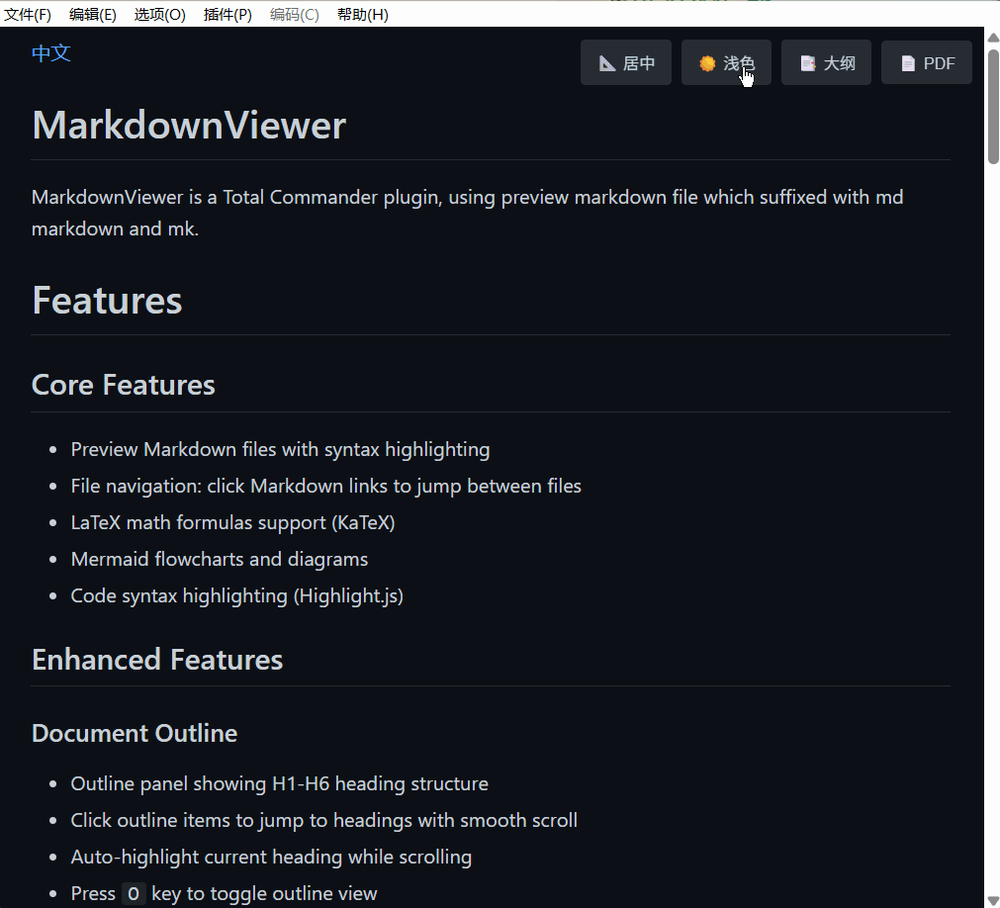

Total Commander 插件 · 开源免费
在 Total Commander 里
流畅预览 Markdown
MarkdownViewer 让你无需离开文件管理器，即可查看 .md / .markdown 文件。数学公式、流程图、代码高亮、文档大纲、Vim 导航一应俱全。
- 10+
- 核心功能
- 3
- 渲染引擎集成
- 100%
- 离线可用
# 欢迎使用 MarkdownViewer
## 数学公式
质能方程：$E = mc^2$
## 流程图
graph LR
A[开始] --> B{判断}
B -->|是| C[执行]
B -->|否| D[结束]
## 代码高亮
func hello() {
fmt.Println("Hello, Markdown!")
}功能特性
不只是渲染 Markdown，更是一套完整的阅读体验。
语法高亮预览
基于 Markdig 渲染管线，支持脚注、Emoji、YAML Front Matter，禁用内联 HTML 阻止脚本注入。
KaTeX 数学公式
完整支持 LaTeX 数学公式渲染，行内与块级公式都能清晰展示。
Mermaid 图表
流程图、时序图、甘特图等 Mermaid 图表直接渲染，无需导出。
代码语法高亮
集成 Highlight.js，多种编程语言代码块都能获得清晰的高亮着色。
文档大纲导航
H1–H6 标题结构一目了然，点击平滑跳转，滚动时自动高亮当前标题。
主题与布局切换
浅色 / 深色主题一键切换，居中窄栏 / 全文宽屏两种布局模式。
Vim 风格键盘导航
j/k 行滚动、d/u 半页、f/b 整页、gg/G 首尾，还有 h/l 横向滚动。
导出 PDF 与链接跳转
按 P 键导出 PDF，点击 Markdown 链接在文件间跳转，外链用默认浏览器打开。
图片与阅读体验
点击图片全屏查看，alt 文本作为标题，顶部渐变蓝色阅读进度条。
界面预览
在实际使用中的效果，所见即所得。

MarkdownViewer 在 Total Commander 中的实际运行效果
安装指南
三步完成安装，即刻开始预览 Markdown。
安装 WebView2 运行时
最新版本使用 WebView2 渲染引擎。如果你使用的是较旧的操作系统，需先安装 WebView2 运行时。
在 Total Commander 中安装插件
在 Total Commander 中双击打开 MarkdownViewer.zip，按提示完成插件安装即可。
快捷键一览
双手不离键盘，流畅阅读每一份文档。
常见问题
支持哪些 Markdown 文件后缀？
.md 和 .markdown 后缀的 Markdown 文件。插件通过 DetectString 自动识别并触发预览。
为什么需要安装 WebView2 运行时？
支持中文文件吗？会不会乱码？
需要联网才能使用吗？
可以自己从源码构建吗？
make release 即可生成 Release 版本。